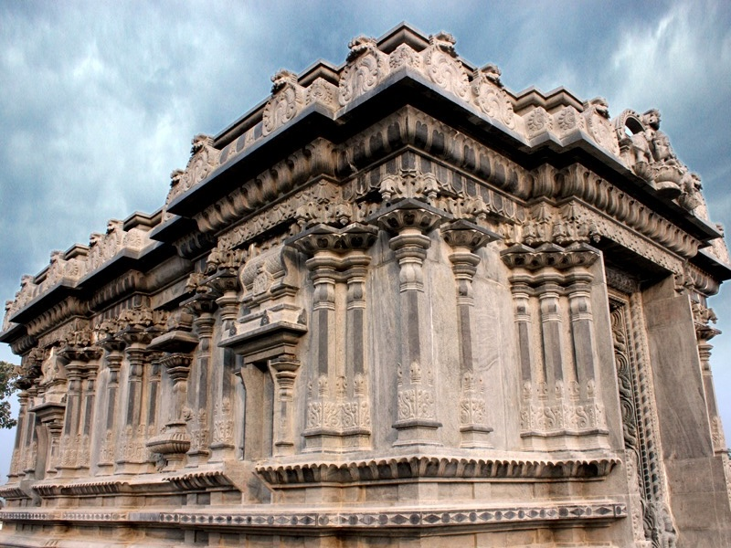
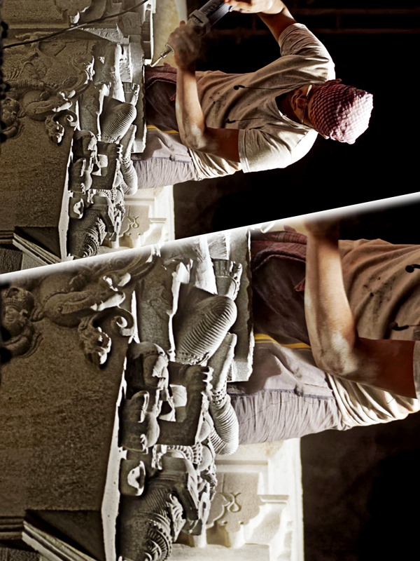

April 2026

Temple Construction Progress
April 2026
Gopuram Architecture
April 2026
Deity Decoration
March 2026
Stone Pillar Carving
March 2026
Mandapam Structure
February 2026
Pooja Ceremony
February 2026
Temple Campus View
January 2026
River Cauvery at Temple Site
January 2026
Foundation Work
December 2025Note: Sample images shown for demo purposes. Actual temple photos will be uploaded by the administrator. Photos can be organized by event, date (day/month), and category.